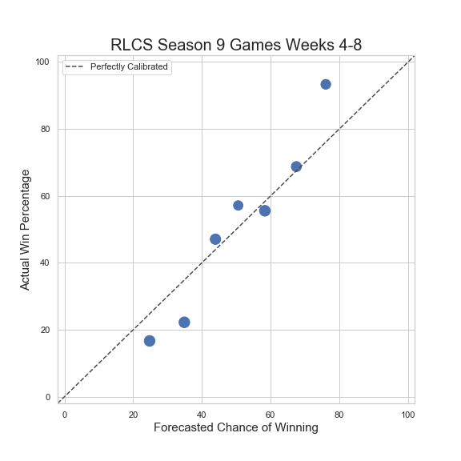

I received a lot of positive reception from this model. Many were surprised at how well it performed (specifically, how it was able to tell when a match was going to be closer or more of a blowout than fans or analysts would have previously predicted). I also got a job offer after explaining my model and showing how well it preformed in real time; however, as I was already interning at a company, and did not want to further delay my graduation, I declined. There is still some work to be done to "fine-tune" the model, and also see how it performs in other sports. As such, I have offered only a vague description of the model as this might one day lead to a publication. If you have any specific questions about the model, you can always send me an email.
Original Model Description
Predictions are based on 1,000 simulations for each game. I use Markov chain to simulate the events of each team and their opponent. Events could include shots, saves, passes, etc. I house the transition probabilities in a transition matrix. A transition probability is defined as the probability of an event occurring given a certain event has just occurred. For example, one transition probability would be the probability of team B saving the ball when team A shoots the ball. Transition matrices are constructed using play-by-play data from previous weeks. This model was used to predict Rocket League (RLCS) matches in season 9.
Model Preformance
What good are predictions if we don't know how well our model performs? Anyone could come up with a model or algorithm that spit out probabilities, but not all predictions will be that accurate. So the next question is: how should we measure the accuracy of our model? One might think of finding the average number of matches I accurately predicted (where any event probability above .5 would be treated as a 1, and any event probability below .5 would be treated as a 0). Using this somewhat naive approach, I get an "accuracy" score of 73%. However, this metric does not take into account the magnitude of the probabilities (for example, 52% chance of an event happening should not be treated the same way as a 74% chance of an event happening). It would be nice to keep this magnitude issue in mind when evaluating the model.
One way to address this issue is to bin the predictions I calculated using the model, and then compare them with the actual scores that have been realized. The following plot shows this:

My (binned) predictions looks promising. This suggests that my predictions are somewhat calibrated. We see that the actual win percentage is fairly close to the forecasted chance of winning. I do want to note that I have only used the model on 1 partial season of RLCS. Thus, we will get a clearer picture at how "accurate" my model is once I have added more data to test the model. Another thing we can do is use a (modified) Brier Test. This will show us how much better (or worse) my model performs when compared with a baseline or reference model. The higher the score, the better. The Brier Skill Score (SS) is defined as:
where MSE is the mean squared error. Thus it is 1 minus the ratio of mean squared errors for two models that we are considering. The reference or baseline model usually used is a model that predicts a 50% chance of an event occurring for every event or state. This is the baseline model I will use when calculating a Brier Skill Score. The following table shows how well our forecasts perform when compared to forecasts from fivethirtyeight.com of other sports:
| Forecasting Score | Sport |
| .0311 | MLB |
| .0696 | Club Soccer Matches |
| .0962 | NFL |
| .1296 | NBA |
| .1917 | World Cup (men) |
| .2035 | My RLCS Forecasts |
| .2502 | Tennis (women) |
| .2715 | World Cup (women) |
| .3135 | NFL Playoffs |
| .3228 | March Madness (men) |
| .3244 | Tennis (men) |
| .3604 | NBA Playoffs |
| .4568 | Club Soccer League |
| .4806 | MLB Playoffs |
| .5232 | March Madness (women) |
It would be great to compare my model with other models predicting outcomes in Rocket League. Unfortunately, there are no models to my knowledge that do this. One could use betting odds, as they tend to predict outcomes quite well; however, there are no betting sites that offer odds for every Rocket League game.
Updated Model
The stucture of league play changed drastically from season 9 to season 10. Due to this (and also due to the fact I wanted to make my model more robust and accurate), I needed to update my model. The core part of the model essentially stayed the same, but I trained a random forest to take into account other features not accounted for in the original model. This required me to scrape Liquipedia for match info. Win percentage, as well as in-game stats were used in the random forest.
Updated Model Preformance
Building the random forest on top of my original model proved quite useful. When I first introduced the updated model by predicting matches in the group stage of one tournament, accuracy increased to 80%. Feeding more data into my model, my model accuracy jumped to 85% for the group stage of the next tournament. Calculating the Brier Skill Score gives a whopping .4844. That's pretty awesome! Obviously, this is a small sample size, but it shows a lot of promise for this model!
| Forecasting Score | Sport |
| .0311 | MLB |
| .0696 | Club Soccer Matches |
| .0962 | NFL |
| .1296 | NBA |
| .1917 | World Cup (men) |
| .2502 | Tennis (women) |
| .2715 | World Cup (women) |
| .3135 | NFL Playoffs |
| .3228 | March Madness (men) |
| .3244 | Tennis (men) |
| .3604 | NBA Playoffs |
| .4568 | Club Soccer League |
| .4806 | MLB Playoffs |
| .4844 | My Updated Forecasts |
| .5232 | March Madness (women) |
Future Work
This was a project done in my free time. I was fairly (and pleasantly) surprised at how it performed. So now the question is what's next? In terms of Rocket League, I plan on fine tuning my model to get a more accurate, and well-calibrated model. I believe that this model can be applied to other sports. Once I have more time, I plan on applying this model to other sports.